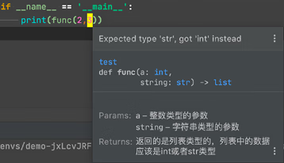

首页 > 编程笔记
Python typing模块的使用
随着 Python 版本的不断更新，许多旧的语法在可读性与效率上都已经有了更好的替代。但是有些语法的出现伴随着种种争议，所以我们不一定非得追求各种最新的语法，选择合适自己的、保持对代码精简可读的追求才是最重要。
本文主要讲解 Python 的类型提示、函数注解和变量注解的新特性，这些新特性使用简单、效果强大，可以提高开发效率和代码可维护性。
typing 模块只有在 Python 3.5 以上的版本中才可以使用，PyCharm 目前支持 typing 检查。
typing 的作用如下：
加入 typing 模块并不会影响程序的运行，不会报正式的错误 ，只会提醒，PyCharm 目前支持 typing 检查和参数类型错误提示。
通过 typing 模块引入的常用数据类型如下。
1) 列表 List 是 list 的泛型，基本等同于 list，其后紧跟一个方括号，里面是构成这个列表的元素类型，如由数字构成的列表var可以声明为：
2) 元组 Tuple 后紧跟一个方括号，方括号中按照顺序声明了构成本元组的元素类型 ，如 Tuple[X, Y] 表示构成元组的第一个元素是X类型，第二个元素是Y类型。
例如，我们声明一个元组，分别表示学生的姓名、年级和成绩，3个数据类型分别为 str、int 和 float，那么可以声明为：
3) 字典 Dict 是 dict 的泛型，主要用于注解返回类型。映射 Mapping 是 collections.abc.Mapping 的泛型，主要用于注解参数。它们的使用方法是一样的，其后跟一个中括号，在中括号中分别声明键名和键值的类型，示例如下：
4) Any 是一种特殊的类型，它可以表示所有类型，静态类型检查器的所有类型都与 Any 类型兼容，所有的无参数类型注解和无返回类型注解都会默认使用 Any 类型。
因此，下面两个方法的声明是完全等价的：
5) 联合类型 Union，Union[X, Y] 表示要么是 X 类型，要么是 Y 类型。例如，Union[int,str] 表示定义一个 int 和 str 的联合类型。
6) Optional 是指这个参数可以为空或是已经声明的类型，即 Optional[X] 等价于 Union[X, None]。
但值得注意的是，这个并不等价于可选参数，当它作为参数类型注解的时候，不意味着这个参数可以不传递了，而是说这个参数可以传为 None。
通过 typing 模块引入数据类型的示例如下：
我们的期望类型是 str 类型，而现在是 int 类型，但是 typing 的作用仅是提示，不会影响代码执行。因此，我们会发现执行结果并没有报错：
2,3。
我们可以在函数声明的
例如，用 ->str 表示函数 demo 的返回值是 str 类型：
例如，函数 demo 声明 name 参数可以为任何类型，而 age 参数是 int 类型，值大于 0，且默认值为 20：
本文主要讲解 Python 的类型提示、函数注解和变量注解的新特性，这些新特性使用简单、效果强大，可以提高开发效率和代码可维护性。
typing 模块介绍
Python 是一门弱类型的语言，很多时候我们可能不清楚函数参数的类型或者返回值的类型，这会导致我们在写完代码一段时间后回头再看代码，忘记自己写的函数需要传什么类型的参数、返回什么类型的结果，从而不得不去阅读代码的具体内容，这降低了阅读代码的速度，而 typing 模块可以很好地解决这个问题。typing 模块只有在 Python 3.5 以上的版本中才可以使用，PyCharm 目前支持 typing 检查。
typing 的作用如下：
- 类型检查，防止运行时出现参数和返回值类型不符合的情况；
- 作为开发文档附加说明，方便使用者调用时传入和返回参数类型。
加入 typing 模块并不会影响程序的运行，不会报正式的错误 ，只会提醒，PyCharm 目前支持 typing 检查和参数类型错误提示。
typing 模块的使用
我们可以直接通过 typing 模块引入需要的数据类型，如 from typing import List。通过 typing 模块引入的常用数据类型如下。
1) 列表 List 是 list 的泛型，基本等同于 list，其后紧跟一个方括号，里面是构成这个列表的元素类型，如由数字构成的列表var可以声明为：
var: List[int or float] = [5, 2.4]
2) 元组 Tuple 后紧跟一个方括号，方括号中按照顺序声明了构成本元组的元素类型 ，如 Tuple[X, Y] 表示构成元组的第一个元素是X类型，第二个元素是Y类型。
例如，我们声明一个元组，分别表示学生的姓名、年级和成绩，3个数据类型分别为 str、int 和 float，那么可以声明为：
student: Tuple[str, int, float] = ('Ben', 5, 90.5)
3) 字典 Dict 是 dict 的泛型，主要用于注解返回类型。映射 Mapping 是 collections.abc.Mapping 的泛型，主要用于注解参数。它们的使用方法是一样的，其后跟一个中括号，在中括号中分别声明键名和键值的类型，示例如下：
def size(rect: Mapping[str, int]) -> Dict[str, int]:
return {'width': rect['width'] + 100, 'height': rect['width'] + 100}
这里将 Dict 用作返回值类型的注解，将 Mapping 用作函数 size 的参数类型的注解。4) Any 是一种特殊的类型，它可以表示所有类型，静态类型检查器的所有类型都与 Any 类型兼容，所有的无参数类型注解和无返回类型注解都会默认使用 Any 类型。
因此，下面两个方法的声明是完全等价的：
def add(a):
return a + 1
def add(a: Any) -> Any:
return a + 1
5) 联合类型 Union，Union[X, Y] 表示要么是 X 类型，要么是 Y 类型。例如，Union[int,str] 表示定义一个 int 和 str 的联合类型。
6) Optional 是指这个参数可以为空或是已经声明的类型，即 Optional[X] 等价于 Union[X, None]。
但值得注意的是，这个并不等价于可选参数，当它作为参数类型注解的时候，不意味着这个参数可以不传递了，而是说这个参数可以传为 None。
通过 typing 模块引入数据类型的示例如下：
from typing import List
def func(a:int,string:str) -> List[int or str]:
"""
:param a: 整数类型的参数
:param string: 字符串类型的参数
:return: 返回列表类型的数据，列表中的数据应该是int类型或者str类型
"""
list1 = []
list1.append(a)
list1.append(string)
return list1
if __name__ == '__main__':
print(func(2,3))
在示例中，func() 函数要求传入的第二个参数为 str 类型，而我们调用时传入的参数是 int 类型，此时 PyCharm 就会警告你，我们将鼠标光标放到提示的地方，会出现图1所示的 typing 提示语。

图1：typing 提示语
图1：typing 提示语
我们的期望类型是 str 类型，而现在是 int 类型，但是 typing 的作用仅是提示，不会影响代码执行。因此，我们会发现执行结果并没有报错：
2,3。
函数注解
因为 Python 不是强类型语言，我们在代码中可以不写类型，但是其他人调用时需要知道参数类型和返回值类型。我们可以在函数声明的
)和:之间加->和注解表达式。例如，用 ->str 表示函数 demo 的返回值是 str 类型：
def demo(name: str, age: 'int > 0' = 20) -> str:
print(name, type(name))
print(age, type(age))
return "hello world"
if __name__ == '__main__':
demo('小小', 2) # 正常显示
参数注解
如果参数有默认值，则在参数名和=之间加:和注解表达式。例如，函数 demo 声明 name 参数可以为任何类型，而 age 参数是 int 类型，值大于 0，且默认值为 20：
def demo(name: any, age: 'int > 0' = 20) -> str:
print(name, type(name))
print(age, type(age))
return "hello world"
if __name__ == '__main__':
demo(name=1, age=2) # name的参数数据类型为Any，正常显示
demo(name='小小', age=2) # name的参数数据类型为Any，正常显示
关注公众号「站长严长生」，在手机上阅读所有教程，随时随地都能学习。内含一款搜索神器，免费下载全网书籍和视频。

微信扫码关注公众号